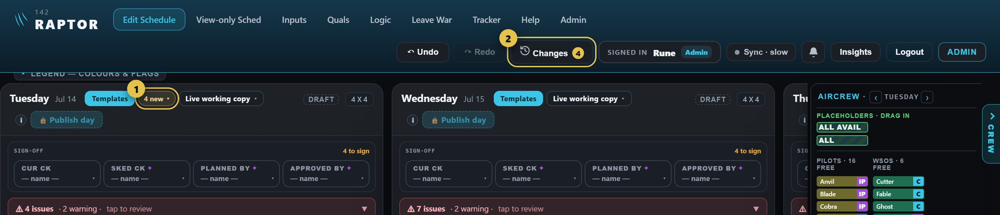
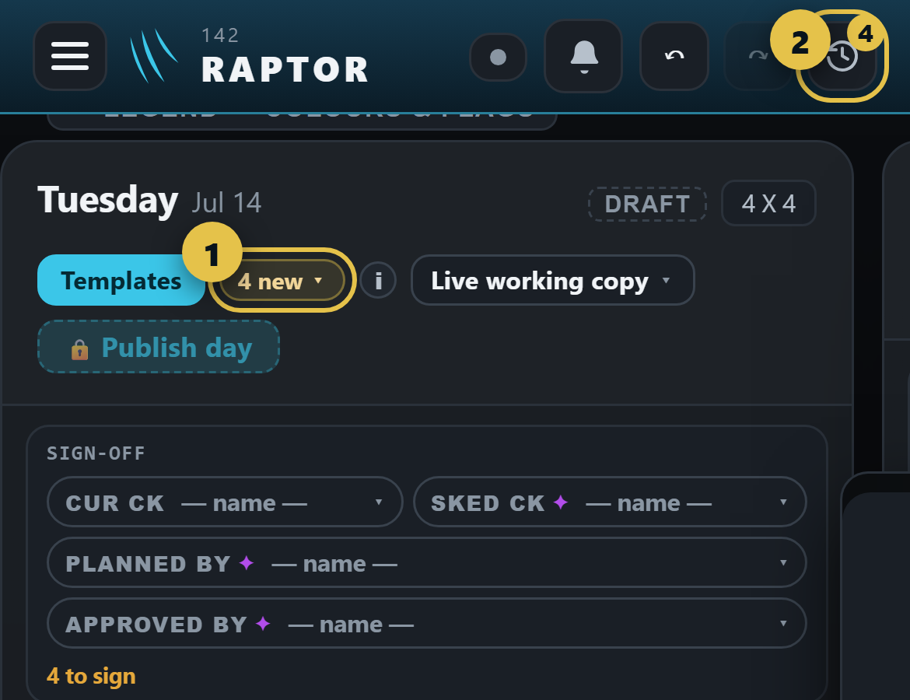
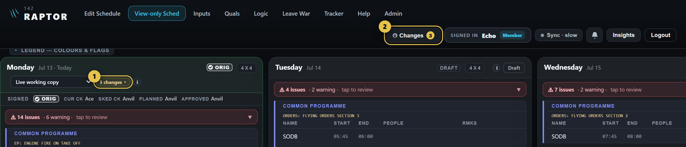
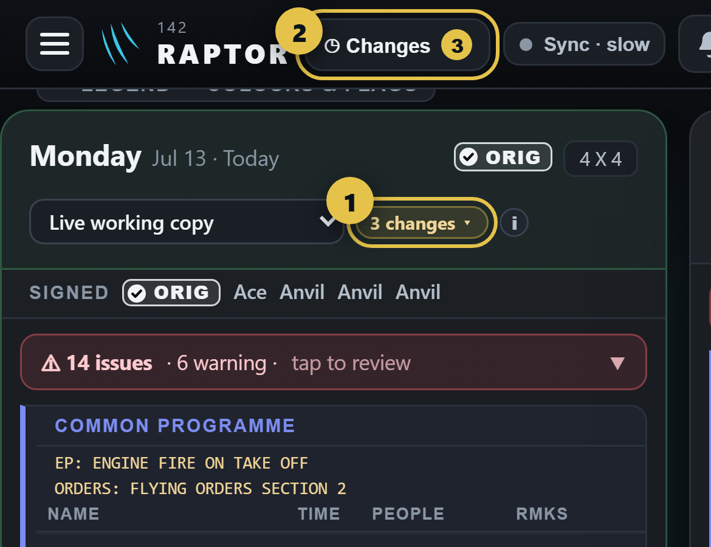

How the changes window opens (mock-up)
Two ways in, the same on every page, ringed in gold:
- 1 · The count in the day's heading — "4 new" on a day not yet published, "3 pending" on a published day, "3 changes" for a member. Opens the window on that day, on New to you.
- 2 · "Changes" in the top bar — it replaces "Edit history" (the clock icon on a phone), with a count of what is new to you. Opens the window on the day you are looking at, on All changes.
An admin on Edit Schedule (Rune)


A member on View-only Sched (Echo)
The top bar gains the same Changes button (a member has none today). When a day's picker is on Live working copy, the heading shows "3 changes". Both open the window read-only.

